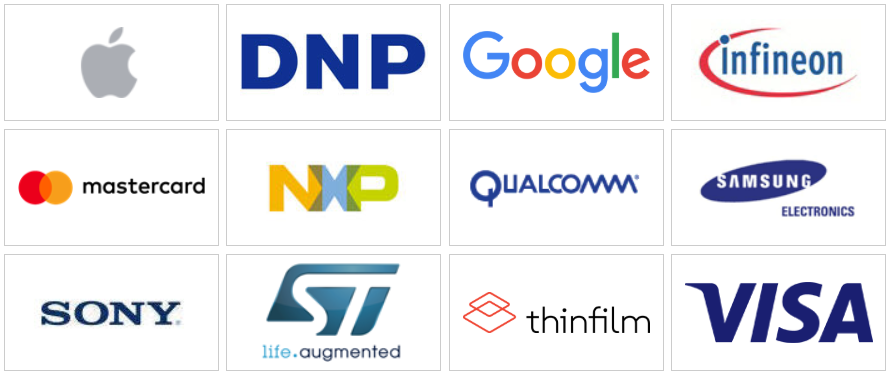

INTRODUCCIÓN
Near Field Communication o Comunicación de Campo Cercano (NFC) es un tipo tecnología de comunicación inalambrica low-cost y cuyo uso es relativamente reciente. Se trata de una tecnología que esta dentro de la Identificación por Radiofrecuencia (RFID) y es característica por su corto alcance (10 centímetros como máximo) y la alta frecuencia que permite el intercambio de información entre dispositivos y que permite enviar y rebicir información al mismo tiempo. El NFC está bajo el estándar RFID y trabaja en una banda de frecuencia libre de 13,56 MHz, lo que permite que no sea necesario aplicarle ninguna restricción y no requiera ninguna licencia para su uso. A efectos prácticos, el NFC funciona mediante un campo electromagnético que intercambia datos. Su velocidad de transferencia es de 106, 212 o 424 Kbit/s, de lo que podemos deducir que está destinada para la comunicación instantánea, siendo muy útil para tareas como la identificación o pago tal y como veremos más adelante.
La tecnología NFC fue aprobada como el estándar ISO/IEC 18092 en diciembre de 2003 debido a que Sony y Phillips intentaban conseguir un protocolo que fuera compatible con las tecnologías sin contactos que existían en ese momento. En marzo de 2004 se creó NFC FORUM por Phillips, Sony y Nokia consiguiendo que empresas como Google, Visa o PayPal apoyaran el uso de este tipo de tecnología. NFC-Forum es una organización que se encarga de regular y determinar las características y estándares del NFC. Sin embargo, cabe destacar que el lanzamiento de la primera especificación técnica no tuvo lugar hasta el año 2006. La tecnología NFC es compatible con el estándar ISO/IEC 14443 para tarjetas de proximidad sin contactos, lo que hace que sea compatible con toda la infraestructura de pago sin contactos y de transporte existentes en la actualidad.
Aunque la tecnología NFC fue aprobada como estándar ISO/IEC en 2003, no comenzó a utilizarse en móviles hasta 2010 después de que Samsung introdujera el primer smartphone con NFC, el Samsung Nexus S. El NFC es conocido por ofrecernos un método de pago que nos permite utilizar nuestro teléfono movil como si de una tarjeta de crédito se tratara, lo cual ha hecho que el NFC se convierta en una herramienta muy útil y, poco a poco, cada vez más conocida. Podríamos decir que el crecimiento de la fama de esta tecnología puede deberse en gran parte a su empleo como método de pago. Sin embargo, son muchos los usos que puede tener esta tecnología debido a la seguridad que nos ofrece y la simplicidad de su funcionamiento. Otra ventaja con la que cuenta es que permite la comunicación con etiquetas NFC, mientras que otras tecnologías RFID como el Blueetoth son incapaces de realizar estas comunicaciones. Además, las etiquetas NFC cuentan con la ventaja de que no necesitan batería, lo que facilita su uso como una tecnología low-cost.
Debido a la versatilidad, sensillez, seguridad, funcionalidad y a que la mayoría de los telefonos actuales incluyen NFC se está convirtiendo en una tecnología muy facil de implementar en actividades de nuestra vida diaria. Algunos de los muchos usos que se le puede dar son: cuidado médico, transferir energía de un dispositivo a otro, detección de la calidad de la comida, IoT, 5G, Ciudades y Casas Inteligentes, smartposter, acceso a parking, entradas, tarjetas contacless, abonos de transporte, DNI, control de acceso a un establecimiento, pen drive con NFC, identificación de productos, cambiar configuración del teléfono, configurar Wifi, emparejar los auriculares con el teléfono, control de robos, etc. Aunque podríamos resumir sus principales usos en:
- Identificación y Método de pago: a través de nuestro telefono movil podriamos identificarnos en una gran variedad de lugares sin la necesidad de cargar con nosotros una infinidad de tarjetas(bonos de transporte, DNI, tarjetas de crédito, entradas, etc.). Para ello solo tendríamos que acercar nuestro dispositivo a un dispositivo de lectura permitiendo la entrada a un parking, abrir puertas, pagar abonos del autobús, o pagar la compra. Sin duda alguna el uso más famoso de todos es el pago con el teléfono móvil y por ello han surgido muchas aplicaciones que nos ayudan a realizar esta tarea con seguridad.
- Intercambio de datos / Publicidad: si nuestro dispositivo realiza la lectura nos permite identificar los productos lo que facilita la tarea en ámbitos como la logística o la medicina. Además, nos permite recibir información acerca de un evento a través de un poster inteligente al instánte.
- Sincronización instantánea de dispositivos: nos permite vincular al instante nuestro teléfono móvil con nuestros auriculares o altavoces.
- Automatización de acciones: las etiquetas NFC nos brindan la opción de poder cambiar la configuración de nuestro teléfono.
TIPOS
Los elementos NFC pueden ser:
- Un dipositivo: smartphone o teléfono movil, PDA, PC, lector RFID, etc.
- TAG: etiqueta NFC.
En el caso de un dispositivo NFC normalmente el tag ya forma parte del dispositivo (smartphones con NFC), en caso de que no lo incorpore nuestro dispositivo podemos pegar un tag a nuestro dispositivo para dotarlo de esta tecnología. El problema con el que nos encontraremos al pegarle la etiqueta NFC a nuestro telefono es que no podremos hacer operaciones complejas con el y sólo nos servirá para identificarnos ya que se trata de un elemento pasivo y, por tanto, no tendrá la capacidad de inicar la comunicación. Tenemos cuatro tipos de tag:
- Tipo 1: sirven para la mayoría de aplicaciones NFC. Se pueden leer y re-escribir, pero solo se puede configurar como un elemento de lectura. Memoria de 96 Bytes - 2KB. Velocidad de comunicación de 106 Kbit/s. No tiene protección de colisión. Compatible con Tags Innovision Topaz y Broadcom BCM20203.
- Tipo 2: similares al tipo 1. Compatibles con NXP MIFARE Ultralight. Incluyen soporte anticolosión.
- Tipo 3: Deriva del estándar de la industria Japonesa JISX6319-4 y son compatibles con Felicia de Sony. Memoria de hasta 1MB- Velocidad de comunicación de 214 o 424 Kbits/s. Son más caras que las anteriores.
- Tipo 4: Derivan de las etiquetas NPX Desfire y son compatibles con ISO-14443A/B. Similares a las de tipo 1 y 2 y están preconfiguradas como lectura/re-escribible/lectura-escritura. Memoria de hasta 32 KB por servicio. Soporta velocidades de 106, 212 o 424 KBits/s. Posee mecanismo de anticolisión.
- Tipo 5 (NFC-V): dan soporte a las etiquetas ISO-15693, aumentando su funcionalidad permitiendo escribir y leer en ellas mensajes en formato NFC Data Exchange Format. Se han utilizado en libros, empaquetado o ticketing.
- MIFARE: es una etiqueta desarrollada por NXP que es muy usada como tarjeta de memoria en las aplicaciones para el transporte. No es una etiqueta NFC Forum, pero esta soportada por muchos dispositivos NFC. Existen varios tipos:
- MIFARE Classic
- MIFARE Ultralight
- MIFARE Ultralight C
- MIFARE DESFire
- MIFARE DESFire EV1
- MIFARE SAM AV2
- Felicia: desarrollada por Sony y es ampliamente utilizada para el pago en transportes asiáticos.
Funcionamiento
Al igual que en ISO 14443, NFC induce un campo magnético donde dos antes de espiral son colocadas dentro de sus respectivos campos cercanos. NFC se basa en RFID, sin embargo, aquí el emisor normalmente es el teléfono móvil que actúa como controlador y provee de energía a las etiquetas para podeer leerlas.
Segun el estándar NFCIP-1 (Near Field Communication Interface and Protocol-1) todos los dispositivos soportan dos modos de funcionamiento:
- Activo: ambos dispositivos generan su propio campo electromagnético, que utilizarán para transmitir sus datos
- Pasivo: solo uno de los dispositivos genera el campo electromagnético, mientras el otro puede transferir los datos. Además, el que genera el campo electromagnético es el mismo que inicia la comunicación.
En la comunicación NFC siempre hay un dispositivo encargado de iniciar la comunicación y monitorizarla, permitiendo tres modos de comunicación:
- Lectura-Escritura. Se puede leer o escribir etiquetas. Se suele utilizar para acceder información como a una página web abriendo automaticamente el navegador o para acceder a la información de un producto a través de una etiqueta NFC.
- Punto a punto. Se emplea para el intercambio de datos o establecimiento de las comunicaciones entre dispositos con NFC.
- Emulación de tarjeta. El dispositivo con NFC puede ser utilizado como una tarjeta inteligente que nos permite que el dispositivo lector lo interprete como una tarjeta contacless. De esta manera nos permite utilizarlo como un medio de pago, almacenamiento o gestión de tipo de entradas y recibos.
- Descubrimiento: se lleva a cabo el descubrimiento entre ambos dispositivos.
- Autentificación: ambos dispositivos se verifican y se determina si se establece algún tipo de cifrado.
- Negociación: se determina la velocidad de transmisión y otros parámetros.
- Transferencia: se intercambian los datos.
- Reconocimiento: el receptor confirma que se ha producido la transferencia de datos.
Instalación
La mayoría de telefonos actuales a día de hoy ya traen instalado el NFC de fábrica, pero, ¿como podemos saberlo? Muy fácil, si tenemos un teléfono Android solo tenemos que irnos a ajustes y buscar "NFC", si no aparece es que no tenemos. Algunos teléfonos traen en la carcasa el símbolo de NFC para señalar que lo tienen. Sin embargo, si este metodo no te convence siempre puedes recurrir a aplicaciones como Device Info HW o NFC Enabled en las que podremos saber si nuestro teléfono soporta o no NFC. En el caso de que tengas iPhone es mucho más facil saberlo ya que a partir del iPhone 6 todos tienen NFC, sin embargo, su uso está mucho más restringido que en Android ya que solo se usó para realizar pago mediante Apple Pay. A partir del iOS 11 Apple ha abierto un poco su uso, permitiendo que aplicaciones de terceros pueden leer NFC de nuestro dispositivo.
En el caso de que nuestro teléfono no disponga de NFC, siempre podemos comprar una pegatina con NFC, normalmente las venden las propias entidades bancarias, y solo tendremos que ponerla en la superficie del móvil. Sin embargo, esto solo nos permite usarla como método de pago o identificación.
Marcas
NFC Forum es un grupo de apoyo y desarrollo de estándares globales dedicado a desarrollar la tecnología de NFC, enseñar al público sus beneficios y aumentar su implantación en todo el mundo cuyos patrocinadores son:
En cuanto a los principales fabricantes de NFC segun los datos de Transparency Market Research son:
- Qualcomm Inc.
- Broadcom Corp.
- STMicroelectronics
- NXP Semiconductor
En cuanto empresas Españolas cabe destacar a Sooft, que es una empresa experta en sistemas que integran NFC y RFID.
Dónde lo podemos encontrar y precios
La tecnología NFC la podemos encontrar principalmente en los dispositivos móviles, pero también podemos encontrarlos en posters inteligentes, altavoces o auriculares, puertas, cajeros automáticos, relojes, anillos, lectores de NFC, llaveros, tarjetas, etc. También podemos comprar etiquetas, en páginas como amazon podemos encontrarlas facilmente y a buen precio. En cuanto a teléfonos que incorporen NFC, si no queremos gastar mucho dinero quizás nuestras mejores opciones por menos de 180€ sean: LG K40, Huawei Y7 Prime, Motorola Moto G7 Power, Alcatel Idol 3, Nokia 3.1. En cuanto a teléfonos de gama media (entorno a los 300€) tenemos Moto G7 Plus, Xiaomi Mi MIX 2 , Samsung Galaxy A40, Huawei P30 Lite. Si nos vamos a teléfonos de gama alta (500€ o más) cualquier iPhone a partir del 6 incorpora NFC y si queremos un dispositivo android podemos elegir teléfonos como Google Pixel 3, Huawei P30, Asus Rog Phone, Xiaomi Mi Note 10 o LG G8 THINQ.
Bibliografía y Webgrafía
Bibliografía
- ALBIÑANA MARTÍNEZ, A. (2016). Desarrollo de una guía para la implementación de aplicaciones basadas en NFC (Doctoral dissertation).
- HAMZAH, M. L., DESNELITA, Y., PURWATI, A. A., RUSILAWATI, E., KASMAN, R., & RIZAL, F. (2019). A review of Near Field Communication technology in several areas. Revista ESPACIOS, 40(32).
- Cao, Z., Chen, P., Ma, Z., Li, S., Gao, X., Wu, R. X., ... & Shi, Y. (2019). Near-Field Communication Sensors. Sensors, 19(18), 3947.
Webgrafía
https://www.xataka.com/moviles/nfc-que-es-y-para-que-sirvehttps://www.20minutos.es/noticia/3241971/0/que-es-nfc-movil/
https://www.rfpage.com/applications-near-field-communication-future/
https://www.ocu.org/tecnologia/telefono/noticias/tecnologia-nfc#
https://electronics.howstuffworks.com/5-ways-nfc-tech-could-rock-your-world5.htm
https://www.xatakamovil.com/sony/la-ultima-patente-de-sony-transferir-energia-de-un-movil-a-otro-sin-cables-con-nfc
https://histinf.blogs.upv.es/2012/11/21/nfc/
https://nfc-forum.org/
https://www.fqingenieria.com/
https://www.shopnfc.com/es/content/6-caracteristicas-tecnicas-de-etiquetas-nfc
https://www.xatakamovil.com/conectividad/como-saber-mi-telefono-movil-tiene-nfc
https://androidphoria.com/tutoriales/poner-nfc-telefono
https://www.transparencymarketresearch.com/